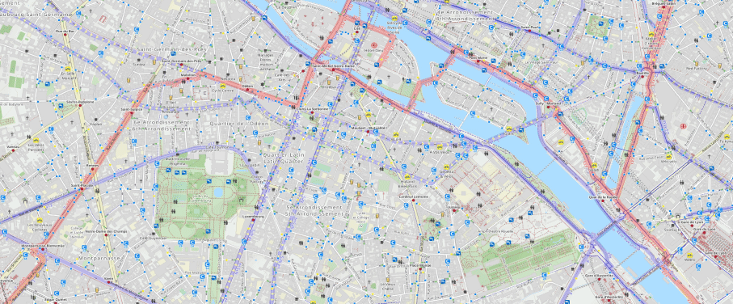

Cakupan dan lokasi
Cakupan layanan
Daftar di halaman ini diambil langsung dari data operasional yang tercatat: daerah supir dan posisi paket. Kami tidak mencantumkan estimasi waktu atau janji cakupan yang belum ada di sistem.
Angka cakupan saat ini
Daerah yang tercatat
Cari daerah Anda
Kata kunci di bawah menyaring daftar daerah supir yang ada di sistem. Jika daerah Anda tidak muncul, artinya belum tercatat, bukan berarti pasti tidak dilayani: konfirmasi dulu ke layanan pelanggan.
Jakarta
9 kendaraan-
Jakarta
3 kendaraan: 2 truk, 1 van
Supir: Kylina Bappe, Marcello, Rendy Purwanto
-
Jakarta Barat
1 kendaraan: 1 truk
Supir: Cipto Harsono
-
Jakarta Selatan
1 kendaraan: 1 motor
Supir: Eko Purwanto
-
Jakarta Timur
2 kendaraan: 2 truk
Supir: Dadang Suryadi, Gani Rachman
-
Jakarta Utara
2 kendaraan: 1 truk, 1 motor
Supir: Dedi Setiawan, Zainal Arifin
Tangerang dan sekitarnya
6 kendaraan-
Bojongsari
1 kendaraan: 1 truk
Supir: Sandi Pratama
-
Tangerang
3 kendaraan: 2 truk, 1 van
Supir: Dodi Supratman, Lionel Pessi, Sergio Termos
-
Tangerang Selatan
2 kendaraan: 1 truk, 1 motor
Supir: Candra Wijaya, Yoga Pratama
Depok
4 kendaraan-
Beji
1 kendaraan: 1 truk
Supir: Rizki Fadilah
-
Depok
3 kendaraan: 2 truk, 1 motor
Supir: Bobby Indrawan, Lelek Pondega, Zinedane Zidane
Bekasi
2 kendaraan-
Bekasi
2 kendaraan: 1 truk, 1 motor
Supir: Budi Siregar, Jese Morinto
Bogor
7 kendaraan-
Bogor
3 kendaraan: 2 truk, 1 van
Supir: C. Ronaldi, Ibrahim Diaz, Timen Suratno
-
Bogor Barat
1 kendaraan: 1 truk
Supir: Luki Hartanto
-
Bogor Selatan
1 kendaraan: 1 truk
Supir: Joko Susanto
-
Bogor Tengah
1 kendaraan: 1 motor
Supir: Mahendra Wijaya
-
Bogor Utara
1 kendaraan: 1 motor
Supir: Indra Kurniawan
Daerah itu belum tercatat
Belum ada daerah supir yang cocok dengan kata kunci tersebut di sistem. Tanyakan langsung ke layanan pelanggan dengan menyebutkan kecamatan, kota, dan kode pos Anda.
Tanyakan lewat emailGudang dan posisi paket
Setiap paket berpindah melalui salah satu dari lima gudang kota berikut sampai mencapai status akhir SAMPAI.
| Kode | Posisi | Jenis |
|---|---|---|
| PS-001 | WH Tangerang | Gudang |
| PS-002 | WH Jakarta | Gudang |
| PS-003 | WH Depok | Gudang |
| PS-004 | WH Bekasi | Gudang |
| PS-005 | WH Bogor | Gudang |
| PS-006 | SAMPAI | Sampai |
Konfirmasi daerah Anda
Sebutkan kecamatan, kota, dan kode pos saat menghubungi kami, agar tim dapat memastikan daerah Anda ada di daftar supir.
Email sudah berisi subjek "Konfirmasi cakupan layanan". Layanan pelanggan aktif Senin sampai Minggu, 24 jam.
Peta ilustrasi
Ilustrasi tampilanGambar di bawah ini adalah gambar peta jalan contoh yang dipakai sebagai ilustrasi tampilan saja. Gambar ini bukan peta cakupan SampaiKilat, bukan pencarian titik antar, dan tidak digambar dari data operasional. Daerah yang benar-benar tercatat hanya yang ada pada daftar daerah di atas.
